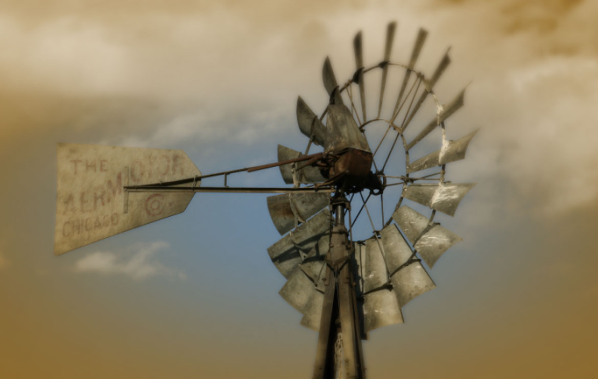

Our Story
Casey Farms was established in 1878 in the Corning Township, Rooks County, Kansas. We are a family farming operation driven by six generations of hard work. Our goal is to be good stewards of the land using sustainable practices.
James Casey (Gen 1)
James Casey was born June 10, 1840 in County Roscommon, Ireland, and immigrated to the United States in 1858. He worked as a miner near Litchfield, Connecticut, and married Hanora Flynn at St. Patrick's Church in Hartford, Connecticut, on Feb. 8, 1868.
The couple lived briefly in New Jersey and Dubuque, lowa, before moving to join other relatives in Braidwood, Illinois. While residing in Illinois, six children were born to the couple: John, Nellie, Mary, Joseph, Thomas and James L.
In 1878, James Casey traveled by train to north central Kansas and walked into Rooks County and established homestead eight miles northwest of Natoma. His family joined him after he had built a dugout. seventh child, Bridget, was born in 1881.
On Sept. 15, 1883, President Chester A. Arthur granted a patent to James Casey for his homestead quarter section under provisions of the Homestead Act of 1862.
In succeeding years he continued make improvements to the homestead and acquired other property in the vicinity of his home. After the turn of the century, James' son, James L undertook the majority of the farm and cattle operation and Mr. Casey retired.
Hanora died June 4, 1906 and James Casey died Jan. 4, 1930, bringing to a close the lives of the two individuals who were truly pioneers of Rooks County and the Natoma, Kansas, area. (Author: Juanita Casey)
James L. Casey (Gen 2)
James L. Casey was born on Sept. 13, 1878 to Irish immigrants in Braidwood, Illinois.
James L. was one of seven children born to James and Hanora Flynn Casey. While still an infant, James L. traveled by train with his mother, brothers and sisters to Kansas to join their father who had homesteaded and built a dugout eight miles northwest of Natoma. It was at this site and the direct vicinity that James L. Casey was to live his entire life as a famer and cattleman and respected member of the community.
He married Anna Westhusin on Feb. 19, 1908. Together, Jim and Anna raised five children on the farm: Freeda, Oct. 15, 1909; Marquerite, July 17, 1912; James C ., June 22, 1917; Velma, March 19, 1920; and Donald, Feb. 29, 1924.
The farm family endured the tribulations of the Great Depression and sustained the family business. James and Anna were members of the Sacred Heart Catholic Church in Plainville, Kansas, and James was a member of the Knights of Columbus.
James L. Casey remained the patriarch of the family farm until his death on June 15. 1952. Anna Casey moved to Plainville where she lived until her death on Dec. 15, 1973. The homestead and surrounding properties remained in the family, being farmed by their children and grandchildren. (Author: Juanita Casey)